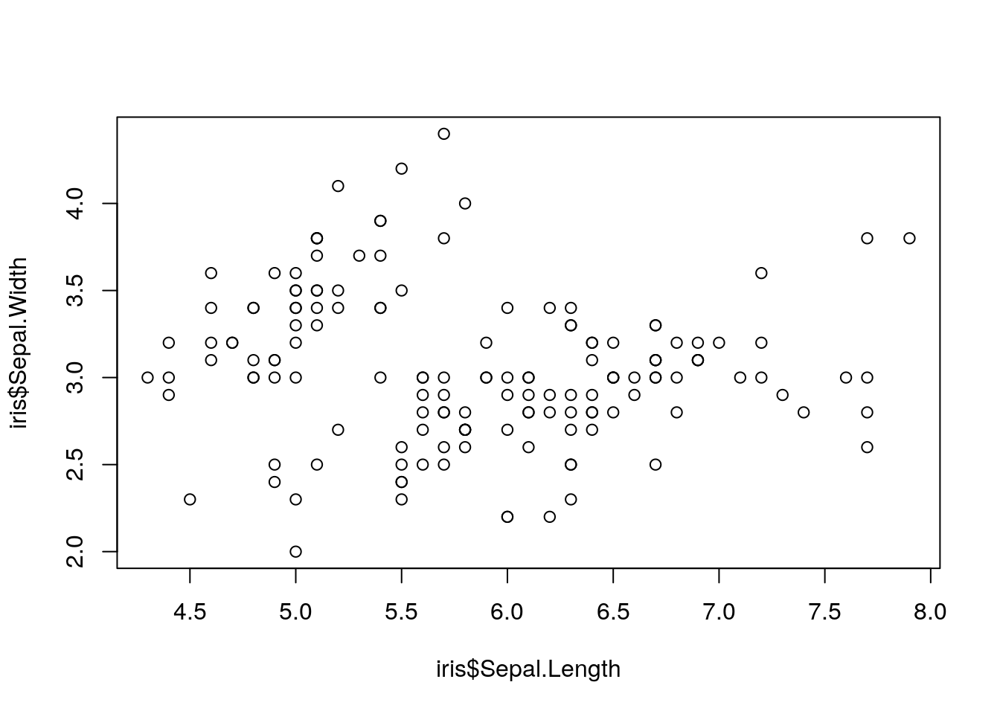

1 Introduction to R
Q: Why are open-source statistical languages the best?A: Because they R!
1.1 Why Does This Book Exist?
There are a lot of resources online to learn R. Some of them are extremely well-written and well-structured, but approach things from a different perspective than I find useful. Some of them are expansive and touch on a massive number of topics, but either don’t go as thoroughly into these topics as might be helpful, or have an interesting writing style or are otherwise hard to follow.
I’ve got a very specific idea of how R should be taught, at least to those interested in using it for data science and other analytical applications. This reader represents that approach - we start off with data visualization, then exploration, and then get into data analysis and transformation. Ideally, this will quickly get you up to speed with tasks that are engaging and show obvious returns on your investment, while teaching the basics of the language you’ll need for more advanced tasks.
But all that comes later. First off, we have to answer one of the most basic questions surrounding this book: what even is R?
1.2 What is R?
R is a programming language used most commonly for data analysis and science. It’s completely free and is adaptable to almost any project - for instance, this book, my website, and plenty of statistical softwares are all written in R. However, where R really shines is in how easy it makes manipulating and analyzing data, which is what we’ll be focusing on here.
1.3 What is coding?
Coding is giving very specific instructions to a very stupid machine.
Or rather, a very literal machine - if you do things out of order, or misspell something, or capitalize things you shouldn’t, the computer won’t do it - instead, it’ll give you an error message. But if you get the syntax exactly right, the computer can do very complex tasks very quickly.
If that sounds frustrating, well… it sometimes is! But getting good at coding is mostly learning to be okay with being frustrated - and learning what to do when your code is being frustrating.
That being said, if your code doesn’t work when you’re getting started, make sure to check that you’ve typed exactly what’s written in the book. Usually errors in code when you’re starting out come from a misplaced comma or parenthesis, so make sure to check that you’ve copied things down correctly!
1.4 Conventions of the book
We’ll go over standard code styles a bit later in the course - there is a Right Waytm to write code, but we won’t worry about that for a few more chapters. But so you can understand a few basics, here’s a few styles we’ll use in the text:
If text is preformatted, it means it’s something from R - a function, some data, or anything else that you’d use in your code. Blocks of code will be represented as follows:
print("Hello, World!")This format both makes it obvious that this is code - not text - and lets you copy and paste it into your R session to see the results for yourself. Code outputs, meanwhile, will mostly be shown like this:
## [1] "Hello, World!"Where text is commented out (that is, has a # in front, so R won’t parse it), so it won’t do anything if you put it in your session.
Generally speaking, you should try and type out each block of code in this reader into R. It’s critical that you start getting the muscle memory of typing in R down - that you understand what needs to be capitalized, what needs to be quoted, and what you’re most likely to typo. You can copy and paste straight from this book, but you’ll be setting your own learning back.
There are some exceptions to these general rules, but this is enough to get us started. With the introductions out of the way, we can start getting you set up to coding R.
1.5 Things You’ll Need
There are two big pieces of software integral to this course reader, namely:
- R - download it here.
- RStudio - download it here. Choose the free desktop version - you don’t need the server software, and you don’t need the commercial license.
We’ll be installing other pieces of software (in the form of R packages) throughout this reader, but each of those will be explicitly labeled when we use them.
1.6 Introduction to RStudio
You’ll almost never need to use R directly in this course - the form of R that you download from that first link is much harder to use than anything professionals interact with. Most practitioners use what’s known as an IDE - an Interactive Development Environment. There’s a lot of choices of IDEs for R, but RStudio is the best one.
Other textbooks would give you a more measured, even-handed approach to this issue. RStudio is the best one, though.
This book is assuming you’re using RStudio for all the examples, questions, and assignments. As such, we’re going to go over what you’ll see when you open RStudio for the first time.

On the bottom right there you’ll see a list of all the files available in the folder that you’re working in. This window will also show you graphs when you make them, and help files when you look for them. Above it is a list of everything that’s available in the current “environment” - that is, all the datasets/functions/code that you’ve already programmed in the session, that can be used again moving forward.
On the left - taking up the full height of the pane - is something called the “Console”. This is the first place you can write R code, where you can give very specific commands to that very dumb machine. This is what we’ll be using for this entire unit - whenever you’re typing code from this reader into R, you should be typing it into the console.
Try it now - it’s time for us to start coding!
1.7 Your First Program
Two things to point out, before we get started - if you type either ( or " into RStudio, you’ll notice that the closing mark ) or " are automatically entered for you. If you type the closing mark, it won’t be entered - RStudio is smart enough to prevent you from duplicating this punctuation. However, your programs won’t work if you have any missing punctuation - if you’re getting weird error messages, make sure you have the proper quotes and parentheses!
Secondly, if you hit “enter” while working in the console, you’ll tell R to process your code and give you the output. If you want to type more than one line at a time, hold shift while pressing enter.
Okay, now let’s get going.
Type the following into the console - but be careful, everything R does is case-sensitive:
print("Hello, world!")What happened? If you did it right, you should have gotten the following:
## [1] "Hello, world!"It’s cool, right? Congratulations, you’re officially a programmer!
What we just did was use a function (print()), R commands that take inputs in the form of arguments (inside the parenthesis) and use them to return an output. We’ll get under the hood of functions in unit 5 - for now, we’re going to use the many functions other people have put together for us.
In addition to saying hi, you can use the R console to do math:
2 + 4 / 2## [1] 46^7## [1] 27993618%%7## [1] 4Note that R generally follows PEMDAS, with a few exceptions - we’ll cover those exceptions in another chapter.
Also, %% is an operator (in the same way that +, *, -, and / are all operators - mathematical symbols that represent a function) which returns the remainder - the integer (whole number) which remains after you’ve divided as much as you can. So while 7 fits into 18 twice (7*2 = 14), it leaves 4 “left over” afterwards.
R can also do a lot of more complicated things. By putting a list of values inside c(), you create what’s known as a vector - a list of objects that R can interact with.
c(1, 2, 3)## [1] 1 2 3c(18, "ESF", 98)## [1] "18" "ESF" "98"c("ESF", "Acorns", "Stumpies")## [1] "ESF" "Acorns" "Stumpies"(The “c” stands for combine, by the way.)
R can use vectors to perform all sorts of matrix algebra operations. For instance, if you try to divide a vector by a scalar (a single number), it will dissolve every object in the vector by the scalar:
c(1, 2, 3) / 3## [1] 0.3333333 0.6666667 1.0000000Meanwhile, dividing a vector by a vector will divide each element in turn - so the first element of the first vector will be divided by the first element of the second, and so on:
c(1, 2, 3) / c(1, 2, 3)## [1] 1 1 1(For more information on matrix algebra, click here. More information on matrix algebra implementation in R may be found here)
That’s about as much matrix algebra as we have to worry about for this book, luckily enough. Let’s go back to our earlier example, where we defined three different vectors:
c(1, 2, 3)## [1] 1 2 3c(18, "ESF", 98)## [1] "18" "ESF" "98"c("ESF", "Acorns", "Stumpies")## [1] "ESF" "Acorns" "Stumpies"Look at the difference between that first and that second output - see how the numbers are in quotes the second time around? While R is capable of holding a lot of different types of data, a single vector isn’t. A vector has to either be a numeric or a character vector - it’s either numbers or symbols. This matters, because you can’t do math with symbols.
For instance, if we divide the first vector by 3:
c(1, 2, 3) / 3## [1] 0.3333333 0.6666667 1.0000000Meanwhile, if we tried to divide our second vector:
c(18, "ESF", 98) / 3# Error in c(18, "ESF", 98)/3 : non-numeric argument to binary operatorWe get our first error message of the course.
I should mention that I lied a little bit - vectors can also be a third type, logical. If a vector is made up of TRUE and FALSE elements - and no other elements - then the vector is considered logical.
Logical values are exactly what they sound like - they return TRUE if something is true, and FALSE if not. For instance:
6 > 4## [1] TRUE4 > 6## [1] FALSE(The > and < symbols are also a type of operator, known as a logical operator. These compare two values and return a logical value of either TRUE or FALSE. You can find a full list of operators at this link.)
Now, the reason I only lied a little is that R understands logical values as binary values - TRUE is 1 and FALSE is 0. For instance:
TRUE == 1## [1] TRUEFALSE == 0## [1] TRUETRUE + 2 ## [1] 318^FALSE## [1] 1By the way, see how I used == to prove two things were equal? In R, = does something completely different than == - it assigns a value, which we’ll get into in unit 2. For now, just know that you should always use == to check if two values are equivalent.
Still, vectors can only hold one type of data - a vector with a value of TRUE and a value of ESF will become a character vector, while c(TRUE, 18, 2) is a numeric vector.
If you need to hold more than one type of data, you need a table - or, as they’re called in R, a dataframe. It is possible to make dataframes by hand in R - note, you can press SHIFT+Enter to start a new line:
data.frame(x = c(1, 2, 3),
y = c("a","b","c"),
z = c(TRUE, TRUE, FALSE))## x y z
## 1 1 a TRUE
## 2 2 b TRUE
## 3 3 c FALSEHowever, this is rare - most of the time, your data will be far too big to make inputting it in R make any sense. Instead, you’ll have to import it from a file elsewhere on your computer - but we’ll get to that later. You’ll see me building basic dataframes using this format throughout this book. I’ll often refer to these as df - the accepted shorthand for dataframe.
By the way, if you make a typo, you can press the UP arrow to load the last line of code you sent to R - don’t worry about retyping everything!
1.8 The iris Dataset
What’s very cool for our purposes is that R comes preloaded with a number of different datasets. Now, if you just type in the name of the dataset, you might overwhelm R for a moment - it will print out every single row of that dataset, no matter how long it is.
Luckily for us, the head() command lets us see just the first few rows of the data. If we use the dataset iris (included in base R), for instance, we’d get the following result:
head(iris)## Sepal.Length Sepal.Width Petal.Length Petal.Width Species
## 1 5.1 3.5 1.4 0.2 setosa
## 2 4.9 3.0 1.4 0.2 setosa
## 3 4.7 3.2 1.3 0.2 setosa
## 4 4.6 3.1 1.5 0.2 setosa
## 5 5.0 3.6 1.4 0.2 setosa
## 6 5.4 3.9 1.7 0.4 setosaNote that while the default is to print six rows, you can choose how many rows to print by specifying n = ## in the head() function. You can even call the last few rows of your dataset by using the similar function tail() - for instance:
tail(iris, n = 3)## Sepal.Length Sepal.Width Petal.Length Petal.Width Species
## 148 6.5 3.0 5.2 2.0 virginica
## 149 6.2 3.4 5.4 2.3 virginica
## 150 5.9 3.0 5.1 1.8 virginicaPretty neat!
1.9 Graphing with R
This dataset contains measurements on 150 different irises, and is the data that was used to develop the first ever linear regressions. Even if you aren’t a stats nerd, this dataset lets us do some cool things. For instance, we can see that there are columns containing information on sepal length and sepal width - I wonder if they might be correlated? What would happen if we asked R to plot() them for us? Here, we’re going to use the $ operator for the first time - we’ll go over what exactly it does in unit 2, but for now, just know it’s how we specify which columns we want the plot() function to use:
plot(iris$Sepal.Length, iris$Sepal.Width)
As you can see, R has some basic plotting functions built right in. However, these plots can be pretty complex to fuss with - and it seems like this plot needs fussing, as right now it claims sepal width and length are unrelated!
Luckily, there are better tools for creating graphics in the modern era. The next chapter will cover how to use those to create effective graphs for data exploration and communication.
1.10 Exercises
1.10.1 Calculate the following:
- The product of 9 * 9
- 9 squared
- The remainder from dividing 27 by 2
- The remainder of 27 divided by 2, divided by 2
- FALSE divided by TRUE. Why did you get this answer?